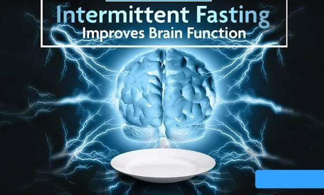
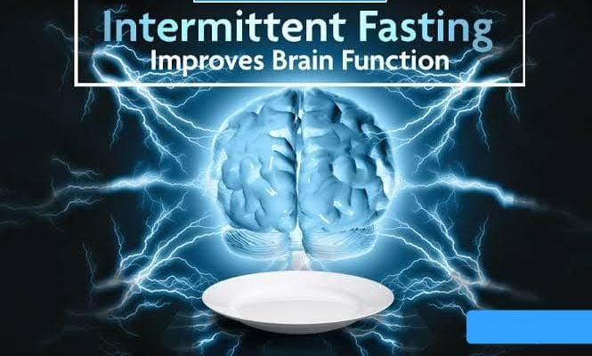
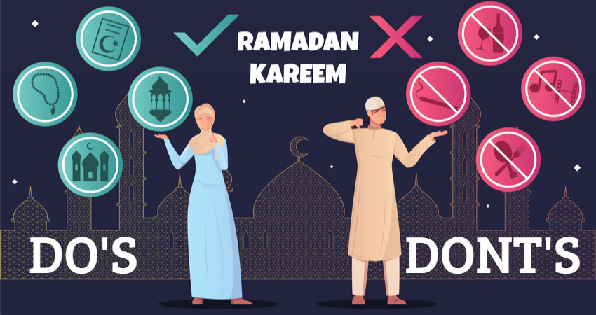
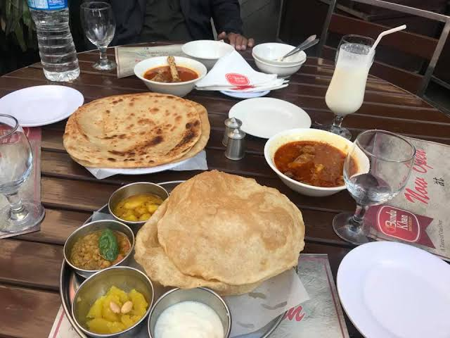
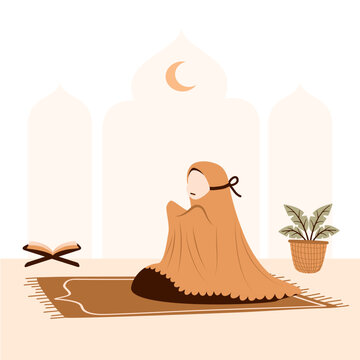
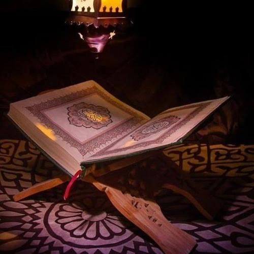
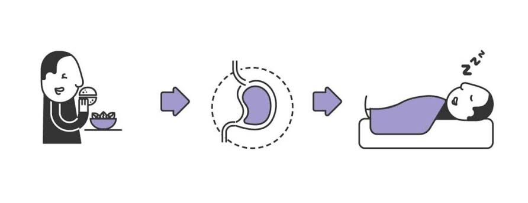

WOW! ITS A RAMADAN KAREEM
"Its a month of more and more blessings
start this Ramadan by give charity and forgiving Everyone and ask forgiviness from others
Once Musa (peace be upon him) asked Allah, "Is there anyone else who is as close as I am to You and can talk to You?"
Allah Almighty said: O Musa! In the last time there will be an Ummah of Muhammad SAW and this Ummah will have a month in which they will have dry lips, thirsty tongues, dry eyes, hungry stomachs when they sit down to break the fast, then I will be very close to them. Musa, there is a distance of seventy curtains between you and me, but at the time of Iftar, there will not be a distance of even a curtain between that Ummah and me, and it is my responsibility to accept the supplications they ask.
Will be."
Subhan ALLAH

BENEFITS OF RAMADAN
There are three types of benefits
- Physically benefits
- Medically benefits
- Scientific benefits
- Physically benefits
- It is stated in the glorious Quran Verse 2 : 183, that Allah says “ O you who believe, fasting is prescribed for you as it was prescribed for those before you, that you may develop God-Consciousness.” The action of fasting is to
- Our Souls ( Spiritual)
- Minds ( Mental)
- Bodies ( Physical)
- and ultimately our relationship
- Medically benefits

 


- Scientific benefits
- Reduce inflammation
- Improved immune system funtion
- increase longevity
RAMADAN ROUTINE
What we do in ramadan kareem?

Its 3:30 O' clock perform a Tahajjud
Tahajjud, also known as the "night prayer" or "Qiyam-u-lail", is a voluntary prayer performed by followers of Islam. It is not one of the five obligatory prayers required of all Muslims, although the Islamic prophet Muhammad was recorded as performing the tahajjud prayer regularly himself and encouraging his companions. The Tahajjud prayer is usually performed in the last third of the night.
Its 4:30 (a.m) Firstly We do Sehri

Perform a Zuhr Prayer

- Then we recite a Holy Quran

Hadith:
"The Excellence of Reciting the Qur’an
“The Excellence of Reciting the Qur’an” highlights the profound significance of engaging with the holy Quran in Islam. Through the divine verses, Muslims find spiritual solace, guidance, and immense rewards. This introduction invites readers to explore the remarkable benefits and blessings that come from reciting and reflecting upon the words of Allah.
Abu Umamah (May Allah be pleased with him) reported:
I heard the Messenger of Allah (ﷺ) saying, “Read the Qur’an, for it will come as an intercessor for its reciters on the Day of Resurrection.”
[Muslim]

Its time to perform a Asar Namaz

Hadith:
"The Prophet PBUH said, “Whoever fasts one day in the way of Allah, then Allah will keep his face away from the fire of hell for seventy years.” (HR. Bukhari and Muslim)
- Now its preparation time of Iftari:

- Yeahhh hooohhh its Iftari time Alhamdullillah:
The time when ALLAH Almightly is too closed with ours The time of shower of more and more blessings we wait for Azan and pray for our self and our dears one,s.
- Eating some food and pakoras also save some foods to eat after maghrib prayer:

- The most awaited Prayer Isha & Taraweeh
Namaz e Isha

Taraweeh

GOing to bed Operate laptop or something else then this routine again start as well as